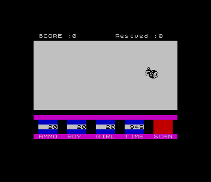

01 · Ant Attack
Secret: the AMMO box waits in the desert
A box labelled AMMO stands at world position X 0, Y 64. The grenade resets to that position when it is inactive, and its normal base graphic is the box. A throw replaces that picture with a dot and an explosion.

From the opening position, one Symbol Shift update turns toward increasing X. Seventy-one forward updates wrap X from 185 through 255 to zero. Another Symbol Shift update turns toward increasing Y; sixty forward updates reach the box at Y 64. The walk stays in the desert.
The box does not supply a new ammunition counter. Ammunition is deducted when a grenade launches and restored by the retry initialization. The actor's saved position is in BASIC $6078; its graphic selection is at $8600.
02 · Ant Attack
Secret: the first ant starts faster than the other four
Difficulty changes the last four ants. The first keeps a movement period of twenty, moving on nineteen of every twenty eligible updates. After four rescues, the other ants move on two of every three eligible updates; after eight, they move on three of four.
The schedule skips one movement update when its countdown reloads. A larger period therefore removes fewer moves. The first ant keeps its faster schedule because BASIC writes the new period to the other four records.
Blue means the ant receives a movement update; yellow means its schedule skips one. All rows begin at the count that the game initializes, so their first skipped updates can differ.
BASIC $63C8 sets the four periods. $8A5D decrements and reloads each counter. Jumping onto an ant can set its movement timer to FF, which makes the scheduler return before moving it ($8BD1).
03 · Ant Attack
Secret: coordinates continue beyond the city
The world map covers X and Y from 128 to 255. Human coordinates still range across a full byte. Walking through 255 wraps to zero, which is why the desert route can reach the AMMO box.
At ordinary heights, collision tests treat coordinates outside the mapped city as empty space. A separate below-ground test supplies solid ground. The city therefore occupies one quarter of the horizontal coordinate space. Sources: $8900 and $8920.
The city plan draws the mapped quarter. The other quarters are the desert around it.